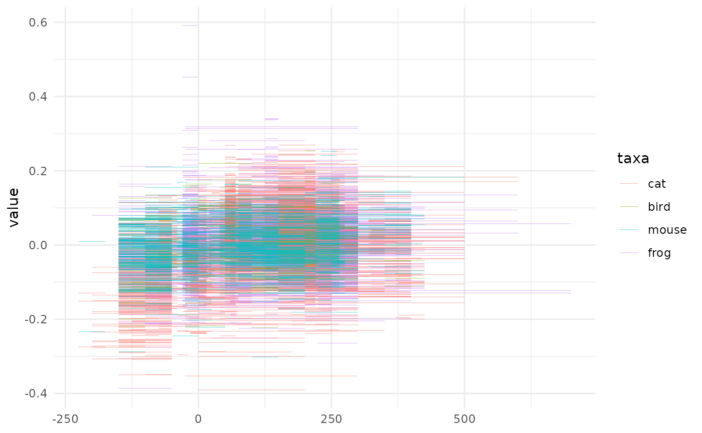
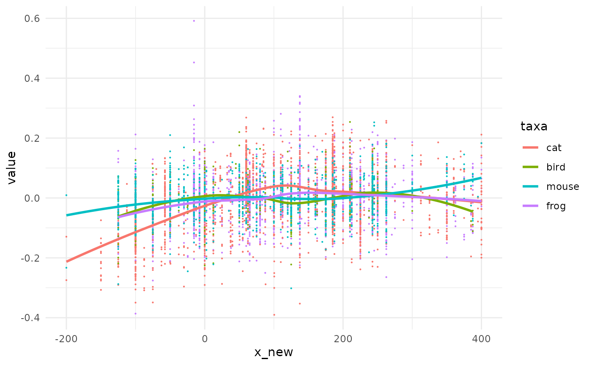
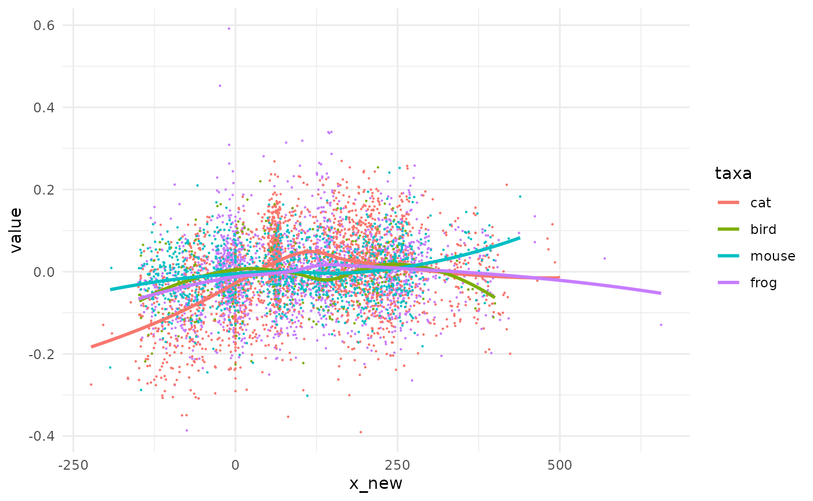

pataqu aims at visualizing and testing the effect of uncertainties on x values (ie the independant variable). This vignette quickly presents the rationale of the package then jump to a case study.
Rationale
Sources of uncertainties
We chiefly had in mind archaeological data which dating of remains are often temporally bounded between two certain events, named terminus post/ante quem, further abbreviated tpq and taq1. The tpq is the earliest date, the taq the latest.
The real event may have happened anytime between these two boundaries with a flat, uniform, density of probability along the interval.
We can also think of radiocarbon dating, which comes with a prediction and a confidence interval (say \(\mu ± \sigma\)). But here the dating differ and the real event has a density of probability of gaussian nature with parameters \(\mu\) and \(\sigma\).
Consequences and how to inspect them
Whatever the source of the uncertainty, the graphics, tests and overall stories we can obtain from data may well be affected. How robust your lovely trends to temporal uncertainties?
pataqu aims at visualizing and testing this using permutations. This is not the only way to do it but in our view it has the merit to only use information contained in the data itself.
The idea is:
- Simulate plausible new x values
- Display and/or test what you need
- Repeat many times and see what happens
Case study: taq and ptq
We will load the package and also use dplyr and ggplot2 from the tidyverse. Overall, if you library(tidyverse) you should not need much more2
animals dataset
This dataset is made of real (and unpublished) data where researchers measured a value of interest on archaeological remains, in several sites (with us or stratigraphical units in them), dated with tpq and taq. The remains belonged to four taxa.
head(animals)
#> # A tibble: 6 × 6
#> taxa site us tpq taq value
#> <fct> <chr> <chr> <dbl> <dbl> <dbl>
#> 1 frog Alz-Br A-B_FO -125 -50 -0.0352
#> 2 frog Ans-lM A-M_12 50 700 -0.123
#> 3 frog Ans-lM A-M_12 50 700 -0.129
#> 4 frog Ans-lM A-M_139 150 200 0.120
#> 5 frog Ans-lM An-M_15 50 700 0.0575
#> 6 frog Ans-lM A-M_150 50 200 0.0528
# We only show the first lines but you can View(animals)How would we treat that? We could decide to display the full interval and see what happens:
# pure cosmetics for lighter graphs
theme_set(theme_minimal())
animals %>% ggplot() +
geom_errorbarh(aes(xmin=tpq, xmax=taq, y=value, col=taxa), size=0.2, alpha=0.5)
What a mess! We could try to add a mid point and add a smoother on top of them.
animals %>%
mutate(x_new=(tpq+taq)/2) %>%
ggplot() +
aes(x=x_new, y=value, col=taxa) +
geom_point(size=0.1) +
geom_smooth(method="loess", formula="y~x", se=FALSE) -> gg_mid
gg_mid We now are able to see some trends but we lost the uncertainty on x in the meantime. The graph before may have also been the one below, with the same likelihood.
We take animals and simply draw other x_new values, not on the midpoint, somewhere between the tpq and taq of each line. We use set.seed for the sake of replicability only.
set.seed(2329)
# lets draw new x values
animals2 <- animals %>%
dplyr::rowwise() %>%
dplyr::mutate(x_new=stats::runif(n=1, min=tpq, max=taq)) %>%
dplyr::ungroup()
# and redo gg_mid graph with this new tibble
gg_mid %+% animals2
Same same but different.
The code used above is exactly what shake_uniform is made of behind the curtain3. Have a look to the different shakers with ?shake
pataqu generalizes this idea with a decoration around this pattern.
The mother function for doing permutations is quake. We will simulate 5 new datasets with randomized datations. We want to use shake_uniform for which we need to specify the column for tpq and taq.
a_q <- quake(animals, k=5, shaker=shake_uniform, min=tpq, max=taq)
#> * quake animals using shake_uniform
#> * launching 5 permutations–>